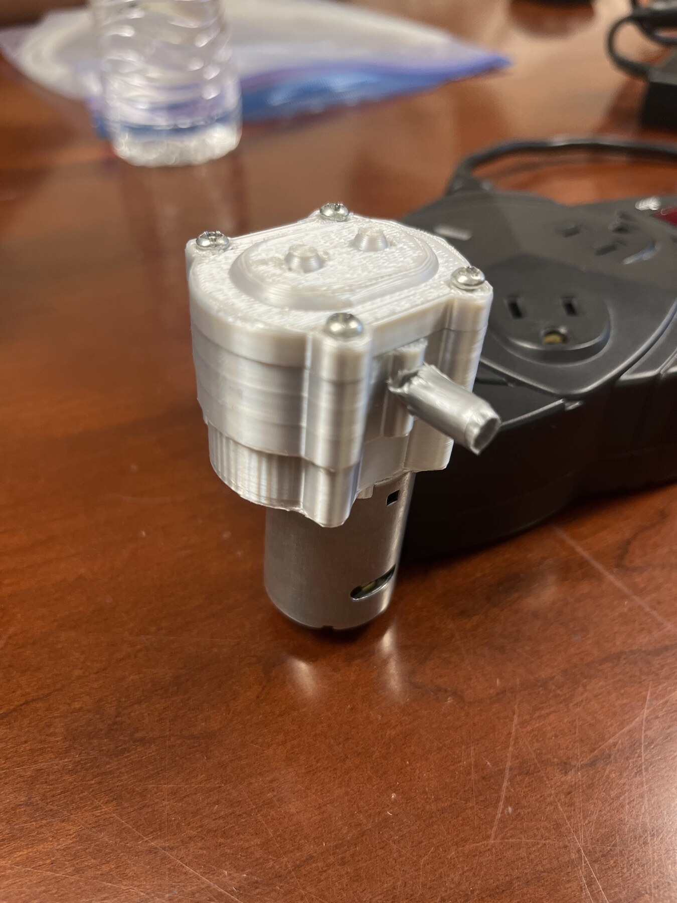
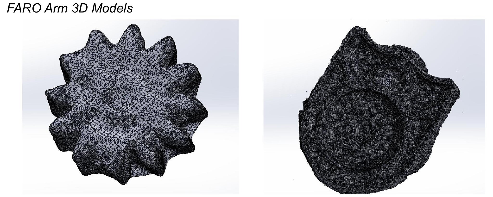
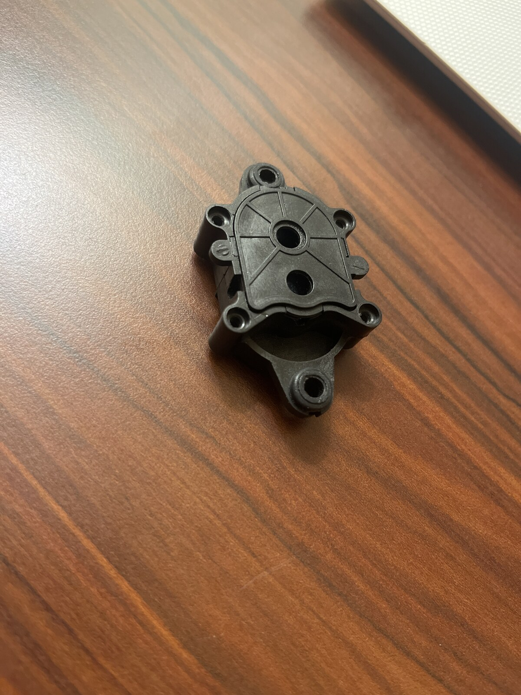
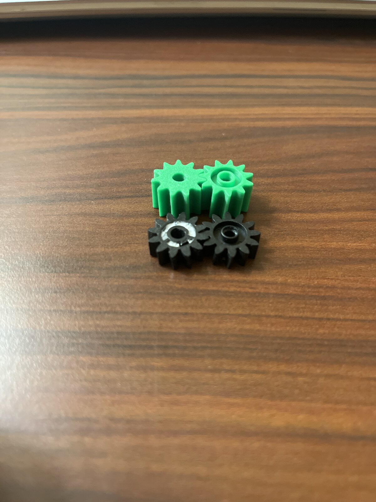
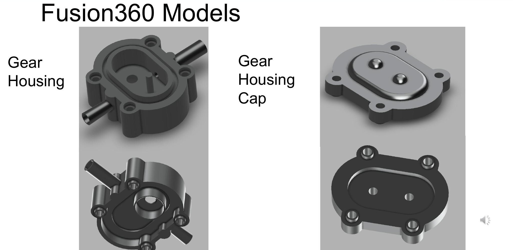
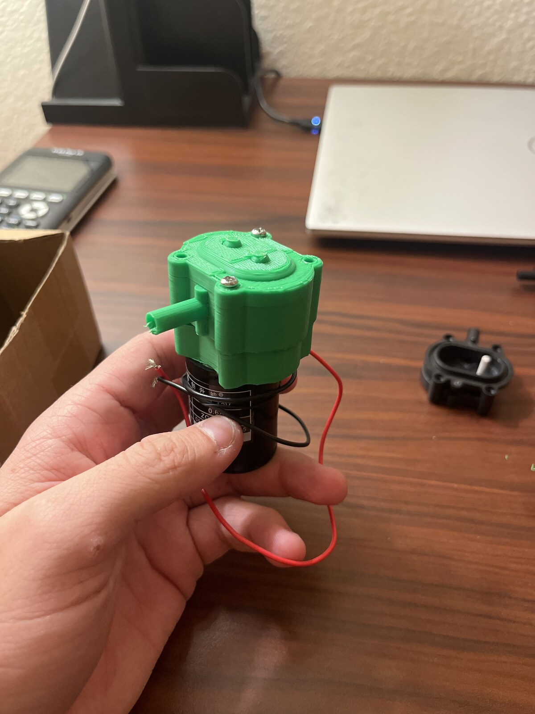
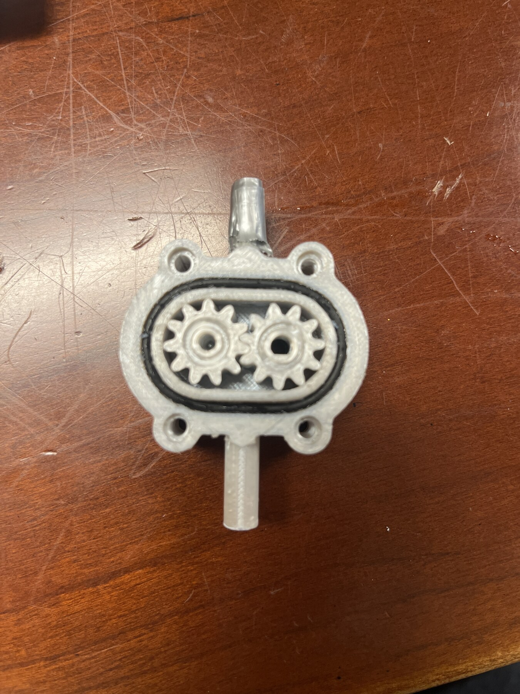

External Gear Pump Reverse Engineering
Our four-person team was given a small 12 V water pump, asked to reverse engineer it, recreate the plastic components with 3D printing, and reach at least 50% of the original flow performance. After researching the pump, we decided not to copy its unusual four-gear layout exactly and instead redesigned it into a more conventional two-gear pump.

Reverse engineer the supplied pump and produce a working 3D-printed replacement.
I measured the assembly with dial calipers, reconstructed the lower housing, researched external gear pumps, and modeled the new gears.
The project became a lesson in CAD interfaces, print tolerance, sealing, and how sensitive a pump is to leakage.
The final printed pump produced 7.71 mL/s compared with 14.25 mL/s for the original, clearing the 50% project target.
The assignment started as reverse engineering, but the original pump raised a design question.
For a Materials course project, our team was given a small ZC-A210 12 V water pump. The original pump used four gears stacked in two pairs and moved water vertically through the gear arrangement, which is a rare arrangment. We were asked to measure the pump, recreate the geometry in CAD, manufacture the plastic components by 3D printing, and produce at least half of the original flow rate.
Before changing anything, we tested the stock pump so we had a baseline. Across ten trials it averaged 14.25 mL/s. That gave us a real number to compare against after rebuilding it.
We were asked to use a FARO arm, but ended up relying on calipers for measurements.
We disassembled the original pump and tried capturing the small parts with a FARO arm. The probe available to us was too large for several of the features, so the scan quality was not good enough to build the final CAD from directly. For the detailed reconstruction, I relied mainly on dial-caliper measurements and checked the interfaces repeatedly as I modeled the lower assembly in SolidWorks.


For parts this small, a careful caliper measurement was more useful than a noisy mesh generated with the wrong FARO probe.
After researching gear pumps, switching to a conventional gear path was most likely to suceed.
The supplied pump was unusual. It used four short gears stacked two-high, with the inlet and outlet arranged so the water moved vertically through the assembly. Most external gear pumps I found used two gears, carried fluid around the outside of the gear teeth, and discharged on the opposite side.
I proposed changing our version to that more conventional layout. I modeled two taller gears in SolidWorks, each replacing a pair of stacked original gears, while our team reworked the housing and moved the outlet to the opposite side of the gear chamber.


Our first prints did not fit together well enough to pump anything.
Different parts of the assembly were being modeled in SolidWorks and Fusion 360 by different team members. The first several prototypes exposed small interface mismatches that looked harmless in separate CAD files but became obvious once we tried to assemble the printed parts.
We printed multiple revisions, compared the physical interfaces, corrected dimensions, and eventually reached a version that sealed well enough to prime and pump water. Early prototypes were printed on my Bambu P1P, while the final parts were produced on a Bambu X1 Carbon in the CBU rapid-prototyping lab.


Our reverse-engineered pump hit the target, but taught us some limitations of 3D printing.
We repeated the same flow-rate test used on the stock pump. The reverse-engineered version averaged 7.71 mL/s, which was 54.1% of the original pump's 14.25 mL/s flow rate. The assignment targeted 50%, so the final prototype met the goal.
My best explanation for the remaining difference was leakage. The original housing was injection molded and could hold much tighter, smoother sealing surfaces than our PLA parts. In a small pump that depends on creating suction, tiny clearances and surface imperfections matter a lot.
What worked
- Reconstructed the small pump geometry from physical measurements
- Converted the four-gear layout into a conventional two-gear arrangement
- Produced a working pump using 3D-printed PLA parts
- Met the required 50% flow-performance target
What I learned
- Tolerances and sealing dominate small pump performance
- CAD interfaces need to be controlled when multiple people model mating parts
- 3D printing can reproduce function, but not every manufacturing characteristic of injection molding
- Reverse engineering is as much about understanding function as copying dimensions
It was a small project compared with ACE or the induction machine, but it was a good exercise in looking at an existing product, figuring out why it works, deciding what I would change, and then testing whether the redesigned version still performed.